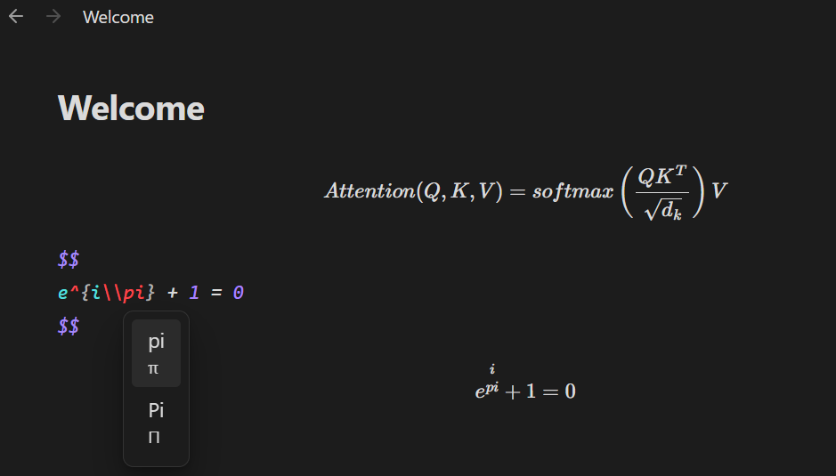
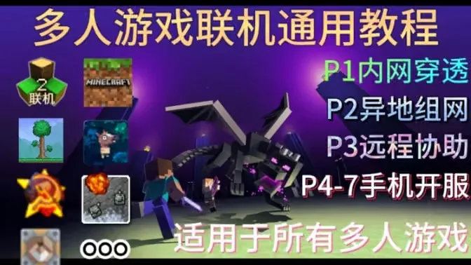

没有框架和构建流水线：md 编成一份 JS 数据，卡片文案手写，阅读页从渲染后的 DOM 反推目录——三条链路各管一件事。
卡片才是数据源：时间线、悬停预览、翻页都从卡片的 DOM 现取，所以卡片写错一个属性，右边那一栏跟着错。
常驻动画的成本是全有全无的：关掉某一个只省 1.5~3.8 点，降采样才是杠杆——全部降到 12~20Hz，底部 GPU 从 56.3 掉到 19.7。
飞鸿踏雪，只见浮光掠影。云层之上，更是万里苍穹。
最近更新
没有框架和构建流水线：md 编成一份 JS 数据，卡片文案手写，阅读页从渲染后的 DOM 反推目录——三条链路各管一件事。
卡片才是数据源：时间线、悬停预览、翻页都从卡片的 DOM 现取，所以卡片写错一个属性，右边那一栏跟着错。
常驻动画的成本是全有全无的：关掉某一个只省 1.5~3.8 点，降采样才是杠杆——全部降到 12~20Hz，底部 GPU 从 56.3 掉到 19.7。

一张 JSON 表决定弹什么，Enter 和 Tab 都归你管；顺手记两个坑——被内置 suggester 抢走的 Enter，和只能靠数 $ 判断的公式范围。
映射表和预览表是两张：前者管插入什么，后者管列表里显示什么，键要对上补全后的完整内容，对不上就只剩原始命令。
判断公式范围不能靠正则回溯：\$ 是转义美元、$$ 是块级公式，混在一行里只能逐字符数 $ 的奇偶，块级再往上累计。
两个页面加一个 PeerJS：主播共享本地流、观众凭 ID 直连，文字互动走全网状，媒体流却只单向推送。
单直播间型适合一对一；多房间型把根节点当监听器，先收集所有主播 ID 再交给主页，于是「指定根节点 + 部署剩余页面」就等于一个直播站。
注意点里最要紧的两条：根节点有推流最高优先级，会覆盖所有子节点；媒体流只推给子节点，所以连接的根节点最好本身就是主播或监听器的子节点。
aarch64 的 Linux 上编 Bevy：cc 缺失、alsa-sys、libudev-sys 三个报错各配一条命令，最后顺手交叉编译 windows exe。
换源写在 ~/.cargo/config，环境变量写 ~/.profile——前者只影响当前用户，后者新开终端才生效。
总结那节把五条 apt 安装压成一行，重装系统时直接抄；桌面环境是可选项，只为把窗口真正跑起来看一眼。
本地能跑只是第一步：把网页、推流与中转串起来，再从公网访问回来。
准备工作一节列了必须的工具组合——网页部署、推流、流媒体中转各选一个就能开工，不必全装。
视频配置那部分最容易卡住：编码参数、上行带宽与端口映射三件事对齐之后，延迟才稳定。

把手机也当服务器：在 Termux 里装 Linux、跑服务端，再按「IP 直连 / 局域网异地组网 / 远程控制」三类游戏分别给出联机路径。
Android 5 以上通用方法与 Termux + proot 两条路线都给了命令；MC 的 Java 服与基岩版互通单独成节。
整篇的取舍是「先能用再优化」：端口、协议、穿透工具都给了判断方法，而不是让你照抄一套固定配置。
没有匹配的文章，换个关键词试试。
没有匹配的 APP，换个关键词试试。